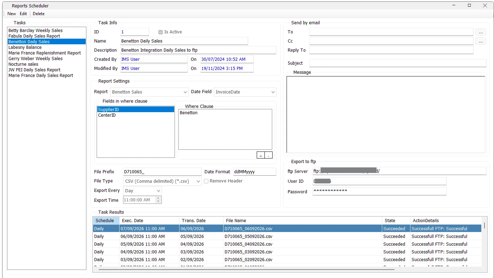

Reporting Scheduler
Reporting Scheduler automates delivery of IMS Custom Reports. A task links one Custom Report to a scheduled period, report criteria, output file format and delivery destination. The IMS Autos service runs active tasks on the server and records the result of every execution.

Required first
Reporting Scheduler works on reports already created in Tools → Custom Reports. If no Custom Reports exist, IMS asks the administrator to create a Custom Report first.
The quality of a scheduled task therefore depends on the complete reporting chain: DBA-created database view → Custom View → Custom Report → Reporting Scheduler.
Task information
| Field | Purpose |
|---|---|
| ID | IMS scheduled-task identifier. |
| Is Active | Controls whether IMS Autos should execute this task. |
| Name | Short task name shown in the Tasks list. |
| Description | Business description of the scheduled delivery. |
| Created By / On | User and date/time that created the task. |
| Modified By / On | Most recent task modification information. |
Name and Description are mandatory when saving a task.
Select the report and date field
Report selects the Custom Report to generate. The scheduler reads the field metadata of that report's Custom View to determine which scheduling criteria are available.
A field classified as TransDate can be selected as the Date Field. IMS Autos uses that field to retrieve the correct transaction period for Daily, Weekly or Monthly execution.
Fields in Where Clause
The scheduler exposes fields classified as StoreID or SupplierID as task criteria. Select one of those fields, then use + to choose the stores or suppliers that should be included in the scheduled report.
The selected values appear in the Where Clause list. Use - to remove selected values.
Output file settings
| Setting | Behavior |
|---|---|
| File Prefix | Text placed at the beginning of the generated file name. |
| Date Format | Controls how the report period date is written into the file name. If omitted, IMS uses a default date format. |
| File Type | Text (Tab delimited) .txt, CSV (Comma delimited) .csv, or Excel Workbook .xlsx. |
| Remove Header | Omits the report-column header row from the exported file when required by an integration/import format. |
Daily file names use the prefix plus the transaction date. Weekly and Monthly files include both the beginning and ending dates of the exported period.
Export Every and Export Time
Tasks can run on one of three schedules:
| Schedule | Normal period exported |
|---|---|
| Day | The previous day's transactions. |
| Week | A weekly period. On a new task, the scheduled weekly execution is triggered on Sunday. |
| Month | The previous monthly period. On a new task, monthly execution is triggered on the first day of the month. |
Export Time sets the clock time at which the IMS Autos service checks and executes the task.
The service also uses the last successfully retrieved transaction date when determining the next period, allowing the scheduler to catch up across missed reporting periods instead of blindly regenerating the last successful file.
Send by email
Scheduled reports can be delivered by email using the IMS SMTP configuration.
| Field | Purpose |
|---|---|
| To | One or more recipients selected from IMS Email Contacts. |
| Cc | Optional CC recipients selected from IMS Email Contacts. |
| Reply To | Reply address used for the scheduled report email. |
| Subject | Base email subject. IMS Autos appends the relevant report date or date range. |
| Message | Email body text. |
To use email delivery, To, Reply To and Subject must all be supplied. IMS validates the Reply To email-address format before saving.
Export to FTP
The same generated report file can be uploaded to an FTP destination. Enter the FTP Server, User ID and Password.
All three FTP fields are required when FTP delivery is used. The stored FTP password is encrypted by IMS.
Email, FTP or both
A task must use at least one delivery method: Email or FTP. Both can be configured on the same task.
If only part of an Email or FTP configuration has been entered, IMS warns the administrator and offers to continue using only the fully configured delivery method.
Task Results
The lower grid is the execution history for the selected task. It shows:
| Column | Meaning |
|---|---|
| Schedule | Daily, Weekly or Monthly. |
| Exec. Date | Date/time IMS Autos executed the task. |
| Trans. Date | Last transaction date included in that generated period. |
| File Name | Name of the generated TXT, CSV or XLSX file. |
| State | Succeeded or Failed. |
| Action Details | Delivery result, such as successful Email/FTP or the stage that failed. |
IMS records failures separately for report generation, file writing and Email/FTP delivery. This makes the scheduler history useful for checking whether a task ran and where a failed automation stopped.
Executed by IMS Autos
Reporting Scheduler stores the task definition; the background execution is performed by the IMS Autos service on the server. Active scheduled tasks are checked by the service, the Custom Report is generated for the required period, the file is written in the selected format, and the configured Email/FTP delivery is attempted.
Create a scheduled task
- Click New.
- Enter the task Name and Description.
- Select the Custom Report and Date Field.
- Add at least one Store/Supplier Where Clause criterion.
- Set File Prefix, Date Format, File Type and Remove Header as required.
- Choose Day, Week or Month and set the Export Time.
- Configure Email, FTP, or both.
- Leave Is Active enabled when the task should run automatically.
- Click Save.
Edit, deactivate or delete
Use Edit to change the report, criteria, schedule, output or destinations. Clear Is Active when the definition should be retained but automatic execution should stop.
Delete permanently removes the selected task together with its saved Where Clause criteria, Email recipient mappings and Task Results history after confirmation.